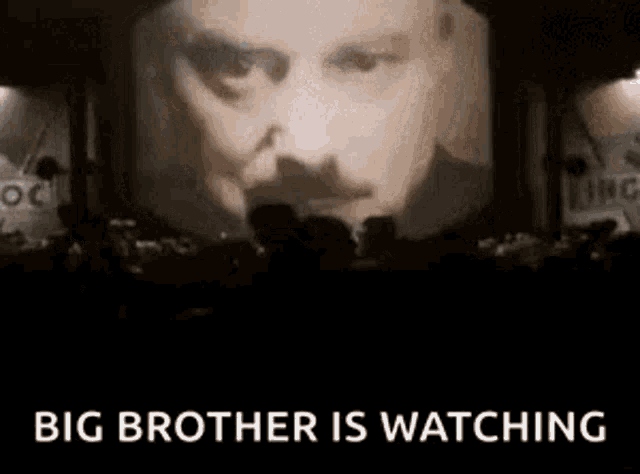
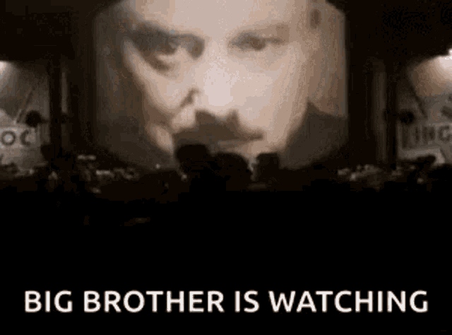
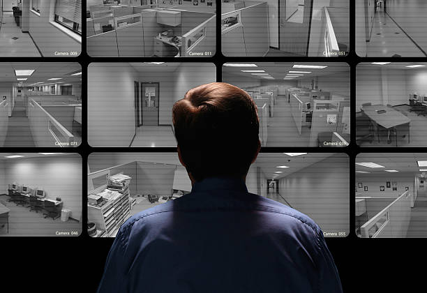
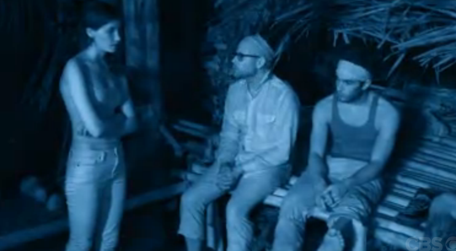
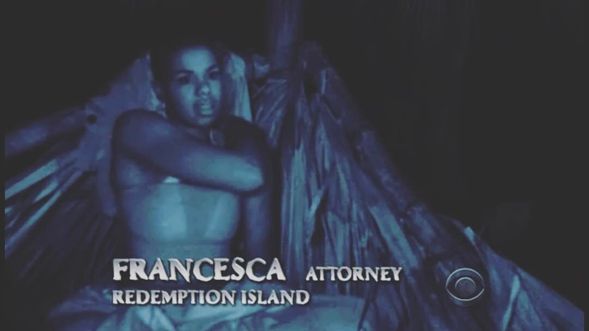
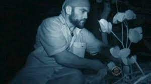
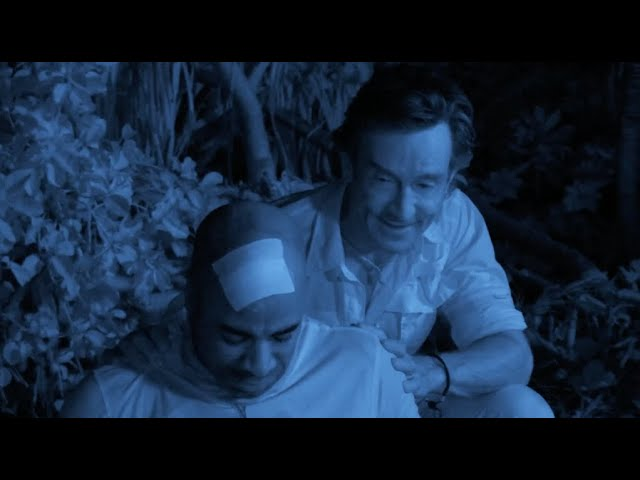

BIG BROTHER IS ALWAYS WATCHING
big brother is an american television reality competition show that emerged in 1997. it follows a group of contestants, known as 'houseguests', as they are isolated from the outside world for a cash price.
THE RISE OF REALITY TV SHOWS




television shows such as survivor and love island have now revived in the current tv economy to become some of the most successful. the use of constant survelliance cameras to follow contestants in the nastiest of times and at their more vulnerable have made viewers keep wanting to tune in.
ARE YOU WATCHING?